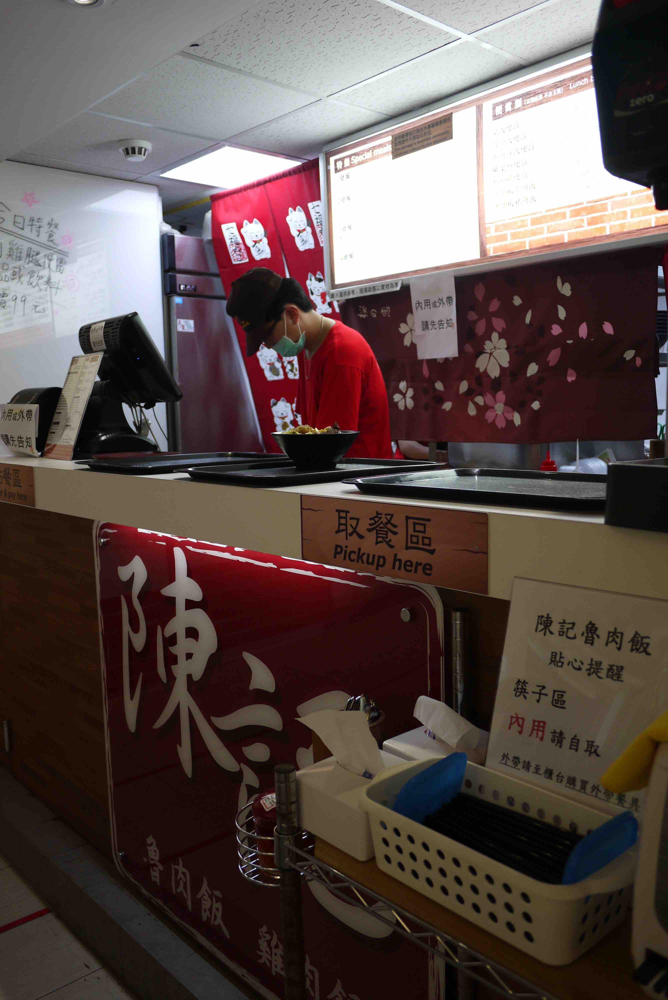
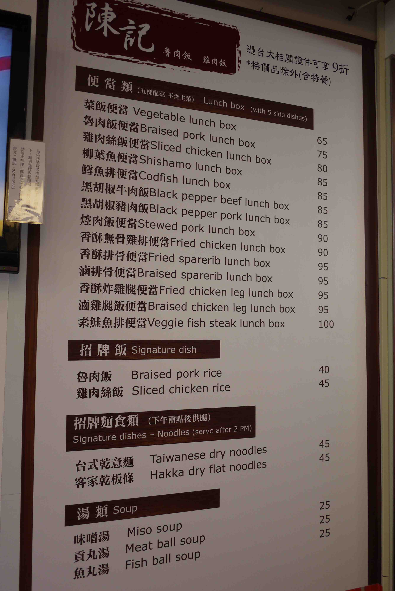
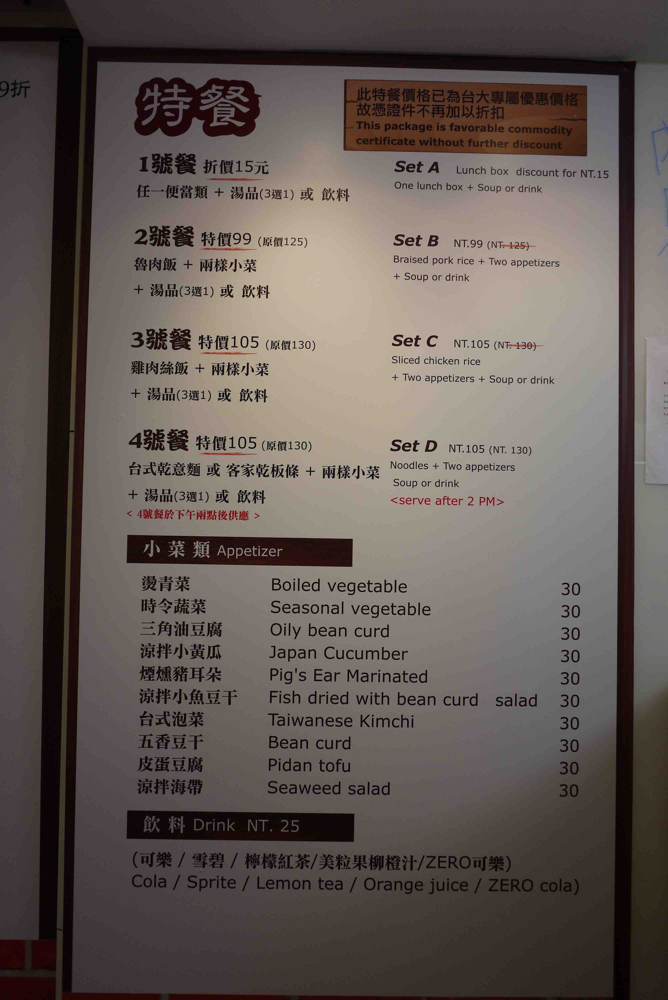
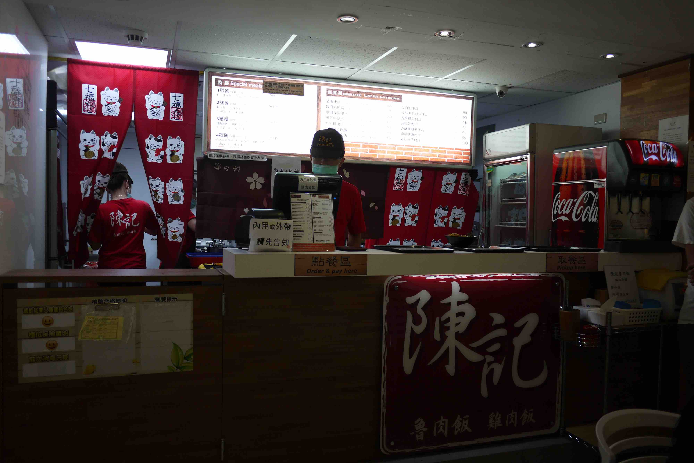

陳記魯肉飯
摩斯漢堡 | COME BUY | 八方雲集| 一信麵家 | 比司多早午餐三顧茅廬| 陳記魯肉飯
- 本校營業地點位置 小福樓2F
- 餐飲業者名稱 陳慶恩
- 公司名稱 陳記魯肉飯
- 營業時間及休息日 1100-2000 無應休日(配合商場)
- 聯絡電話 0935-860-883
- 營業項目、型態 便當、快餐、飯食、麵類
- 業者簡介
以提供中式餐點、魯肉飯、雞肉飯等為主，因進駐臺灣大學小福樓商場，為服務校內師生需求，除原本中式餐飲內容外，特別增加便當、麵食等品項，並以優惠價格來提供服務!
餐廳業者參考照片
- 
- 
- 
- 